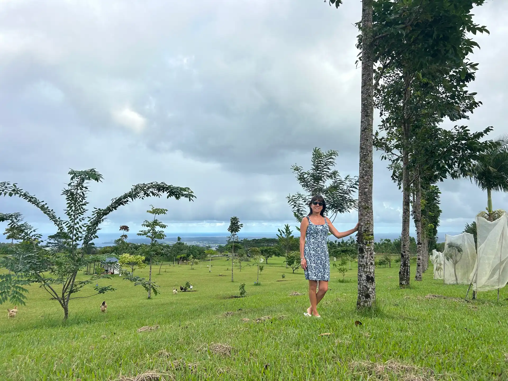
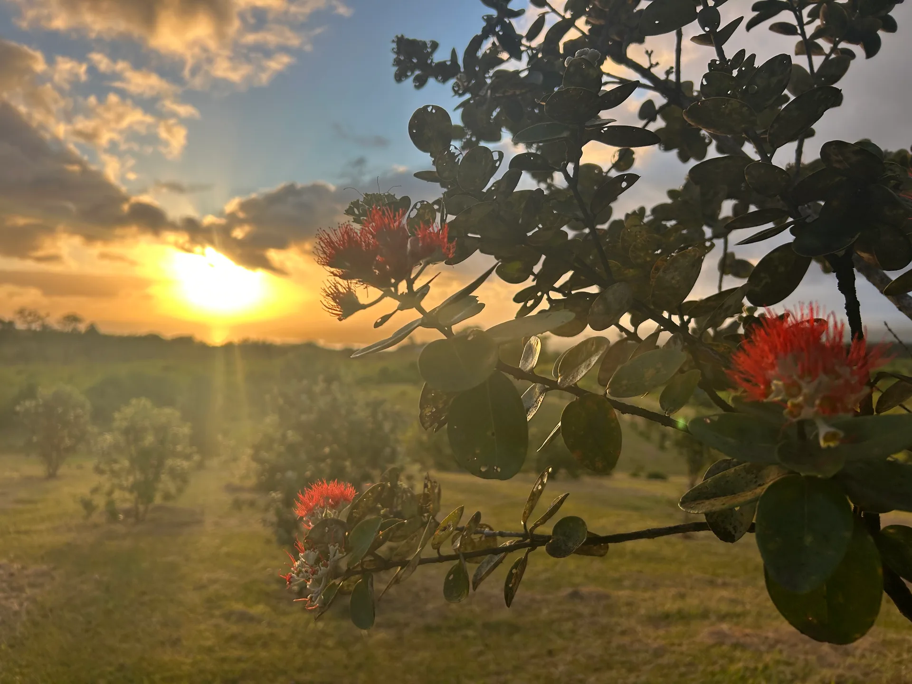
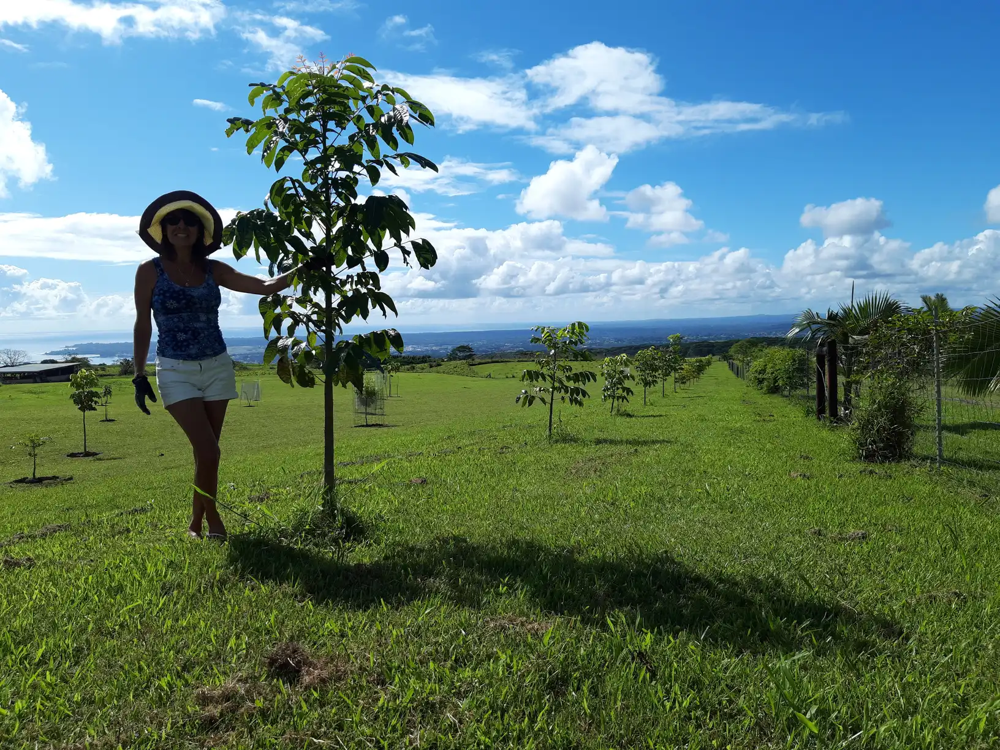
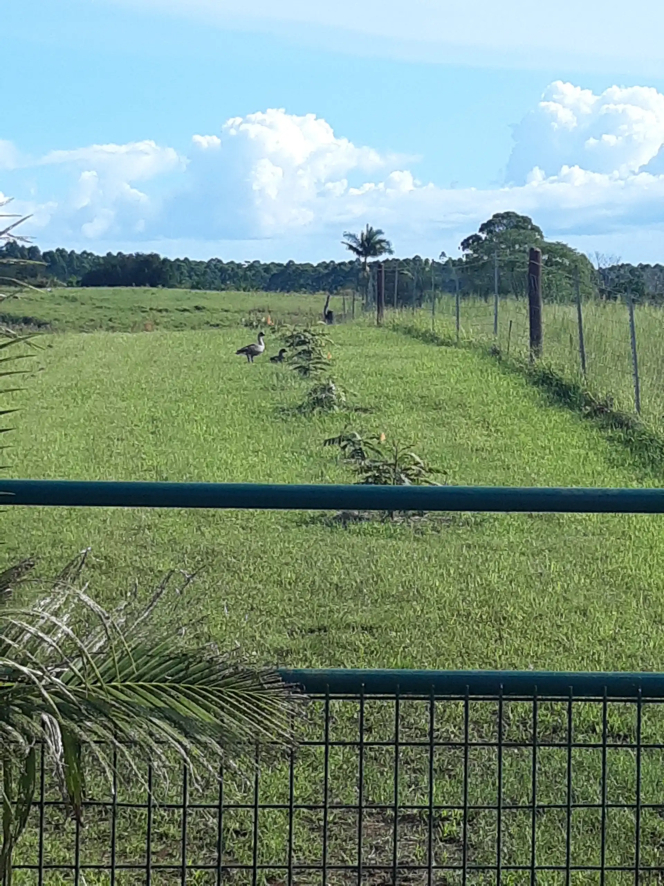
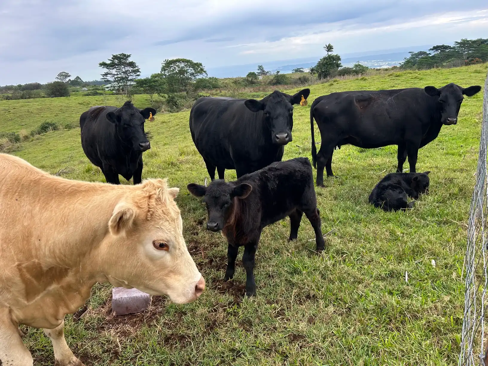
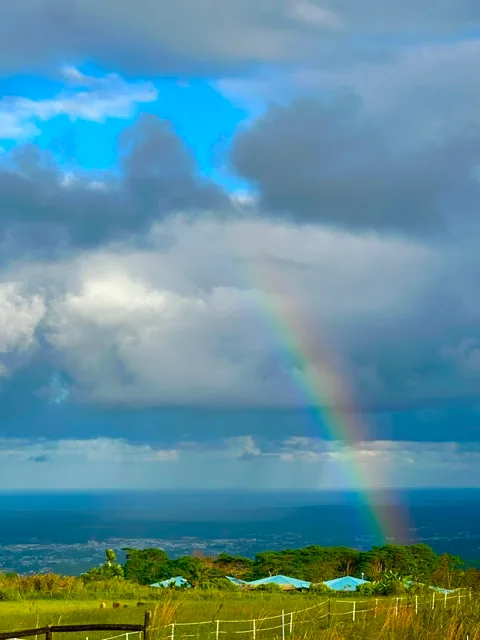

Hāmākua Coast · Hawaiʻi Island
Our Forest
Plan
How planting a five-inch tree can change the landscape — and inspire a person — within a single human lifetime.
From Sugar Cane & Cattle
Back to Forest
Our 20 acres on the Hāmākua Coast, just above Hilo, were once native forest — before they were cleared for sugar cane and cattle.
When we began, we envisioned gradually bringing the forest back. What started as a long-term dream has become a very tangible project: we have planted more than 2,000 native and non-native trees, with a carefully planned approach to how the land will evolve over time.
Today our land is a long-term experiment in forest restoration, agroforestry, and living landscapes — combining native and endemic species, a diverse canopy, an educational tree collection, understory planting, pasture, and livestock, along with the realities of restoring privately owned land over many years.
- 20 acres being restored
- 2,000+ trees planted
- 900 native trees & shrubs on 3 acres
- 26 years calling Hawaiʻi home
How our 20 acres are planned
An Intensely Planted Native Area
Through a grant and with the help of the USDA Natural Resources Conservation Service (NRCS), we planted approximately 900 trees and shrubs across just three acres.
This intensely planted area is designed to establish a new layer of vegetation — a native foundation for everything that grows around it.
Planted here, among others
- ʻŌhiʻa
- Koa
- Koaia
- ʻIliahi (sandalwood)
- Hāpuʻu
- Pua Kenikeni
- ʻIlima
- Milo
- Kukui

A Future Forest & Living Tree Park
Beyond those three acres, we have dedicated another nine acres to developing a future canopy forest.
With guidance from a couple of botanists, we also envisioned this area as a kind of living tree park — an opportunity for people to encounter tree species they may have heard about all their lives but rarely have the chance to see growing.
Some were chosen specifically for their educational value, while many others were selected as canopy trees to establish the future forest.
Growing in the tree park
- Mahogany
- Cedar
- Blue marble
- Narra
- Primavera
- Monkeypod
- Cocobolo
- Hau
- White, pink & yellow shower trees
- Bodhi
- Milo
- Balsa (fast-growing canopy)

The Mahogany Story

When we planted those little mahogany trees, they were only about five inches tall. Five years later, they are already more than 60 feet tall — and still growing.
That simple transformation has become one of the most inspiring things for our visitors. People can stand beside these enormous young trees and learn that the tree they plant today — something they can hold in their hands — can become a magnificent living monument to nature within just a few years. Seeing it has inspired many of our visitors to think differently about trees, time, and what they themselves can contribute to the landscape.
What Grows Beneath the Canopy
As the trees establish themselves, we are starting to bring in smaller trees and shrubs as a second layer — with an interest in developing elements of agroforestry within the young forest.
Cacao in the understory
Young cacao trees are already growing beneath the mahoganies, letting us explore how food-producing plants can eventually become part of a developing forest ecosystem.
For their first two to three years, each one wears a protective net cover — otherwise rose beetles would eat the entire plant. That is the price of growing with no poison, 100% organic.
Where Trees & Animals Coexist
The remaining eight acres are pasture for our small herd — three cows, three calves, and a bull.
Rather than seeing pasture and forest as separate landscapes, we are increasingly interested in silvopasture: the intentional integration of trees, forage, and livestock.
- Shade & shelter — trees protect the animals from sun and weather
- Healthier soil — managed livestock contribute to nutrient cycling
- Carbon & habitat — trees in pasture store more carbon and give wildlife a home
Rather than simply converting the pasture into forest, we may eventually explore a landscape where trees and animals live side by side. In about five years, as the first areas of forest become more established, we hope to begin this next stage.

How Our Land Will Evolve
-
2020
The dream takes root
Mauricio and Paola begin planning a forest for land once cleared for sugar cane and cattle.
-
The first years
Native restoration & canopy
About 900 native trees and shrubs on three acres with NRCS, and a diverse canopy forest and tree park across nine more.
-
Today
A young forest
More than 2,000 trees in the ground — and mahogany planted at five inches now stands over 60 feet tall.
-
Next
Understory & agroforestry
Smaller trees and shrubs beneath the canopy, beginning with young cacao planted beneath the mahoganies.
-
In about 5 years
Silvopasture
Trees, forage, and our herd begin sharing the pasture as one integrated, living landscape.

Inspire You
We are Mauricio and Paola Barbis. After 26 years of calling Hawaiʻi home, this project has become one of the ways we hope to give something back to the island that has given our family so much.
Our land offers a hands-on look at how a private landscape can evolve over decades — from an intensely planted native restoration area, to a diverse canopy forest, to an educational tree park, and eventually toward an integrated landscape of agroforestry and silvopasture.
Perhaps our story is also about something very simple: how planting a five-inch tree can change the landscape — and inspire a person — within a single human lifetime. Inspiring you is our goal.